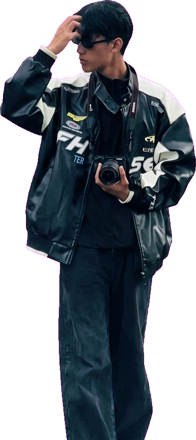

Click to open full project page ↗
currently learning: shaders
Hi, I'm HEIN SOE KHANT. I turn boundless imagination into playable reality. Fantasy inspired, always building.
Touch & drag to inspect 🎮
FANTASY WORLDS *
DONGHUA & ANIME *
MANHWA *
SPEAKS 4 LANGUAGES *
GAME DEV *
IMAGINATION TO REALITY *
FANTASY WORLDS *
DONGHUA & ANIME *
MANHWA *
SPEAKS 4 LANGUAGES *
GAME DEV *
IMAGINATION TO REALITY *
About Me

Game Dev & Storyteller
Speaks 4 Languages
HEIN SOE KHANT
Game Programmer
My Journey & Vision
Turning Boundless Imagination into Playable Reality
Hi, I'm HEIN SOE KHANT. My world revolves around epic fantasy—deeply inspired by high-concept donghua, anime movies, and fantasy manhwa.
I chose the game development path because I want to bridge the gap between imagination and reality. In games, fantasy isn't just something you passively watch—it becomes an interactive universe you can touch, explore, and conquer.
What Inspires Me
- Donghua & Anime Movies
- Manhwa & Epic Worldbuilding
- Fantasy Lore & Exploration
What I'm Good At
- Gameplay Logic & Systems
- C# / Unity / C++
- Rapid Prototyping
- Speaks 4 Languages (Multilingual)
What I'm Learning
- Shader Graph & Visual VFX
- Procedural Worlds
- Technical Art & Lighting
Things I Built
Click to open full project page ↗
廻猫 - MEINEKO -
IGCC Game Jam 優秀賞The Fail Log
Things I broke, and what I learned.
Error: Custom Physics Engine
What broke: Tried writing a custom gravity and collision system instead of engine colliders. Players clipped straight into the void.
What I learned: Don't reinvent the wheel without a benchmark reason. Standard engine colliders are battle-tested.
Error: Scope Creep
What broke: Planned an epic fantasy RPG with 10 classes and massive lore for a 48h game jam. Finished zero playable loops.
What I learned: Cut the scope in half, then cut it again. Nail the core gameplay loop first, then expand the world.